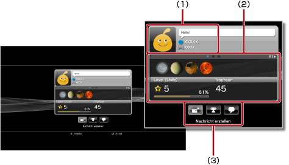
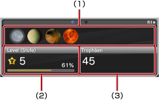

Freunde > Liste der Freunde > Anzeigen von Profilen
Anzeigen von Profilen
Sie müssen eventuell die System-Software aktualisieren, bevor Sie diese Funktion verwenden können.
Sie können Ihr Profil oder das Profil eines Freundes anzeigen lassen. Wenn Sie das Profil eines Freundes anzeigen wollen, wählen Sie den Avatar des Freundes aus.

(1) |
Statusanzeige |
|---|---|
(2) |
Informationen |
(3) |
Kontrollmenüs |
Anmerkung
Weitere Informationen zu Statusanzeigen finden Sie unter  (Freunde) > [Liste der Freunde] > [Prüfen des Status] in diesem Handbuch.
(Freunde) > [Liste der Freunde] > [Prüfen des Status] in diesem Handbuch.
Anzeigen von Informationen auf einem Profilbildschirm
In einem Profil werden Informationen wie der Fortschritt bei Trophäen, die Anzahl der pro Stufe gewonnenen Trophäen und ausführliche Informationen zu den Freunden angezeigt. Mit der L1- oder R1-Taste können Sie durch die Informationen blättern.

(1) |
Kürzlich gewonnene Trophäen |
|---|---|
(2) |
Aktuelle Stufe und Fortschritt zur nächsten Stufe |
(3) |
Gesamtzahl gewonnener Trophäen |
Verwenden der Kontrollmenüs unter [Profil]
Während ein Profil angezeigt wird, können Sie über die Kontrollmenüs verschiedene Funktionen ausführen. Welche Icons auf den Kontrollmenüs angezeigt werden, hängt vom Status des Freundes ab.
 |
Menü (Titel des Spiels) | Anzeigen einer Liste von Aktionen, die beim gerade laufenden Spiel ausgeführt werden können. |
|---|---|---|
 |
Einen Freund hinzufügen | Senden einer Anfrage, ob eine Person zu Ihrer Liste der Freunde hinzugefügt werden möchte. |
 |
Nachrichtenliste | Anzeigen einer Liste der Nachrichten, die Sie mit einem Freund ausgetauscht haben. |
 |
Nachricht erstellen | Erstellen einer neuen Nachricht. |
 |
Trophäen vergleichen | Vergleichen Ihres Fortschritts bei Trophäen mit dem Status bei einem Freund. |
 |
Neuen Chat starten | Starten eines Chats. |
 |
Auf Freundesanfrage antworten | Öffnen der Nachricht mit der Anforderung zum Hinzufügen als Freund und Senden einer Antwort. |
 |
Zur Blockierliste hinzufügen | Hinzufügen eines Freundes zu Ihrer Blockierliste. |
| Aus der Blockierliste entfernen | Löschen eines Freundes aus Ihrer Blockierliste. |
Anmerkungen
- Die Kontrollmenüs können nicht ausgeblendet werden.
- Die Kontrollmenüs werden nicht angezeigt, wenn Sie Ihr eigenes Profil anzeigen lassen.
Ändern der Hintergrundfarbe für Ihren Profilbildschirm
Wählen Sie den Tab oben links auf dem Profilbildschirm und drücken Sie die  -Taste, um die Farbpalette aufzurufen. Wählen Sie aus der Palette die Hintergrundfarbe für den Profilbildschirm aus.
-Taste, um die Farbpalette aufzurufen. Wählen Sie aus der Palette die Hintergrundfarbe für den Profilbildschirm aus.

Anmerkung
Sie können nicht die Hintergrundfarbe für den Profilbildschirm anderer Personen ändern.
Vergleichen des Status der gewonnenen Trophäen mit Freunden
1. |
Wählen Sie unter |
|---|---|
2. |
Wählen Sie
|
3. |
Wählen Sie ein Spiel aus.
|